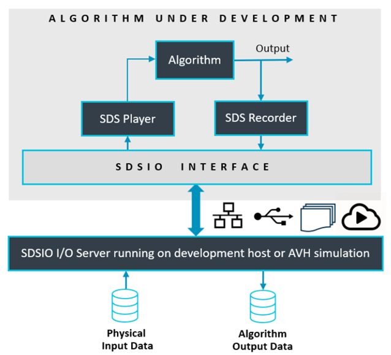

SDS Template Application
The SDS template application is a test framework for DSP and ML algorithms. It allows recording and playback of real-world data streams using physical hardware or on simulation models using (Arm Virtual Hardware - FVP) to an user algorithm under test. The real-world data streams are captured in SDS data files. This enables multiple uses cases:
- Validate and Optimize Algorithms using playback. This allows to repeat test cases with the same data streams.
- The captured data streams can be labeled and used as training data set for AI Models in MLOps systems.
The SDS template application is implemented as CMSIS-Toolbox Reference Application. It is hardware agnostic and requires a SDSIO-Layer and a Board-Layer with drivers for the specific target hardware.
The SDSIO-Layer connects the SDS template application to a communication interface for SDS file I/O operations.
The following SDSIO interfaces are pre-configured:
- Ethernet Interface using the MDK-Middleware Network component.
- USB Bulk Interface using the MDK-Middleware USB component.
- Memory Card Interface using the MDK-Middleware File System component.
With a custom SDSIO interface alternative file I/O configurations are possible.
SDS Template Structure
The structure of the SDS template application is shown below. Two projects select between data communication test and user algorithm test. Two target-types allow to deploy the test application on hardware (evaluation board) or AVH FVP (simulation model).
A standard board layer that is provided in several BSP provides the hardware interface. The SDSIO layer uses for communication the MDK-Middleware or on AVH FVP target a virtual simulation interface (VSI).

The build-types DebugRec or ReleaseRec configure the template to record SDS data files. This allows recording of the input data stream and the algorithm data stream using physical input peripherals on hardware.

The build-types DebugPlay or ReleasePlay configure the template to playback SDS data files. This allows playback of the input data stream while also recording the algorithm data stream. The test application can run on hardware (evaluation board) or AVH FVP (simulation model). As the input data stream can be repeated it allows to verify and optimize the algorithm while capturing the output data stream.

Working with the SDS Template
The SDS template application and SDSIO interface layers are part of the SDS pack.
Several Board Support Packs (BSP) contain board layers that support the required API interfaces. Refer to the Overview page of the pack to check the Provided connection API Interface of the layers. The table below lists the required API interfaces that should be provided by the Board-Layer.
| Required API Interface | Description |
|---|---|
| SDSIO File System | |
| CMSIS_MCI | CMSIS-Driver MCI interface to memory card. |
| CMSIS_VIO, STDOUT, STDERR | For user button and printf output. |
| SDSIO Network | |
| CMSIS_ETH | CMSIS-Driver Ethernet MAC/PHY interface. |
| CMSIS_VIO, STDOUT, STDERR | For user button and printf output. |
| SDSIO USB Device | |
| CMSIS_USB_Device | CMSIS-Driver USB Device interface. |
| CMSIS_VIO, STDOUT, STDERR | For user button and printf output. |
Note
When such a board layer is not available, it is possible to create a compatible board layer.
Using VS Code
This section explains how to use SDS template application with the Arm CMSIS Solution for VS Code. This extension is for example part of Keil Studio.
For the example below the STM32F746G-DISCO board is used that provides interfaces for all SDSIO communication interfaces.
Install Required Packs
To make the software components available, install the SDS pack and the pack for the select evaluation board, for example with:
>cpackget add ARM::SDS
>cpackget add Keil::STM32F746G-DISCO_BSP
Create New Solution
The SDS template application is selected in the Create a new solution dialog for boards with layers in the BSP.

Once the csolution project is loaded the VS Code IDE presents you with a dialog that lets you select a compatible software layer and a compiler toolchain that is available on your computer.

Note
- The Add Software Layer dialog only appears when the BSP contains a board layer with compatible API Interfaces (see next section).
- ST board layers are configured for the Arm Compiler (AC6) using STM32CubeMX. However, it is easy to reconfigure for different compilers. The steps are provided in the BSP overview.
Build the Template Application
The SDS template applications contains two targets (evaluation board, AVH FVP simulation model) and two projects:
- DataTest is a data communication test between target and SDSIO server or filesystem.
- AlgorithmTest allows to add the DSP or ML algorithm that should be tested.
Use the command CMSIS:Manage Solution Settings to choose a one project that you want to explore. Start with the DataTest first that should work "out-of-the box" on target hardware.

Once the configuration is selected, use the build command to generate the template application. Then download the application to the selected target.
Compile for Custom Hardware
The steps to add a custom hardware configuration are:
- Open the
*.csolution.ymlfile and add a newtarget-type.
target-types:
- type: MyHardware
device: STM32U535CBTx
variables:
- Board-Layer: $SolutionDir()$\Board\MyHardware\Board.clayer.yml
- SDSIO-Layer: $SolutionDir()$\layer\usb\sdsio_usb.clayer.yml
- Add a board layer that implements the API interfaces described above.
Note
- You may copy an existing board layer as starting point. But typically these board layers support a range of reference applications and contain driver API interfaces that may be removed.
- The step above allows also manual configuration without using the VS Code IDE.
Using DataTest
The DataTest project validates the communication channel.
Record on Simulation Model
- Select the target
AVH-SSE-300with ProjectDataTestand Build TypeDebugRecto record SDS data files. - Build and Run the application.
This run should generate the files: ....
- Use SDS-Check to verify correctness of recording with:
...
Playback on Simulation Model
-
Rename output file ...
-
Change to Build Type
DebugPlay(targetAVH-SSE-300with ProjectDataTest).
This run should generate the files: ...
Compare the output files with ....
Record on Hardware Target
....
Playback on Hardware Target
...
Configure Bandwidth for DataTest
The DataTest project uses a fixed algorithm to verify the communication interface. With the file datatest/sds_algorithm_config.h it is possible to configure bandwidth and interval to match the requirements of the algorithm that should be tested.
Using AlgorithmTest
ToDo
Add User Algorithm
In the SDS template application these files require changes to interface with the DSP and ML algorithm that is tested:
algorithm/sds_algorithm_config.hconfigures the block size of data streams.algorithm/sds_algorithm_user.cis the interface to the DSP/ML algorithm under test.algorithm/sds_data_in_user.cis the interface to the physical data source.
Example Projects
Configured variants of the SDS template application are provided in a separate GitHub repository github.com/Arm-Examples/sds-examples. These examples show the usage of the SDS-Framework with real-world devices and use cases.
Using Example Projects
ToDo